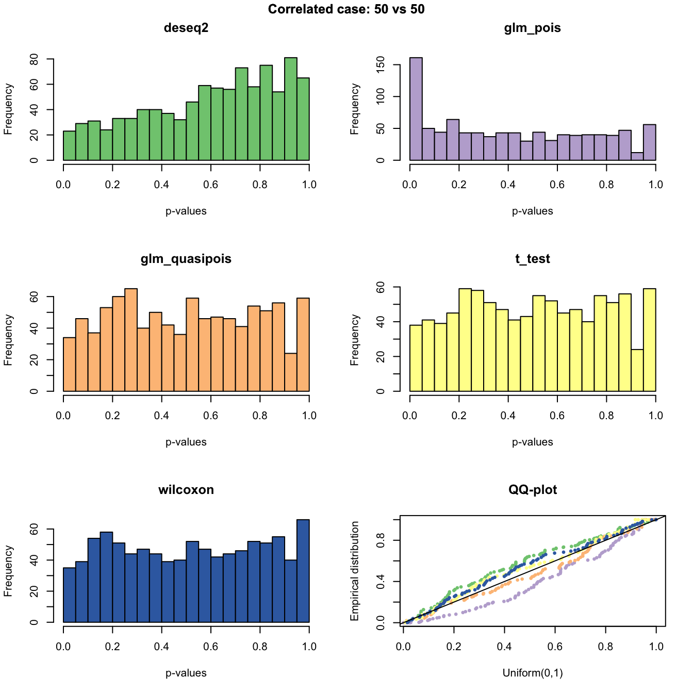
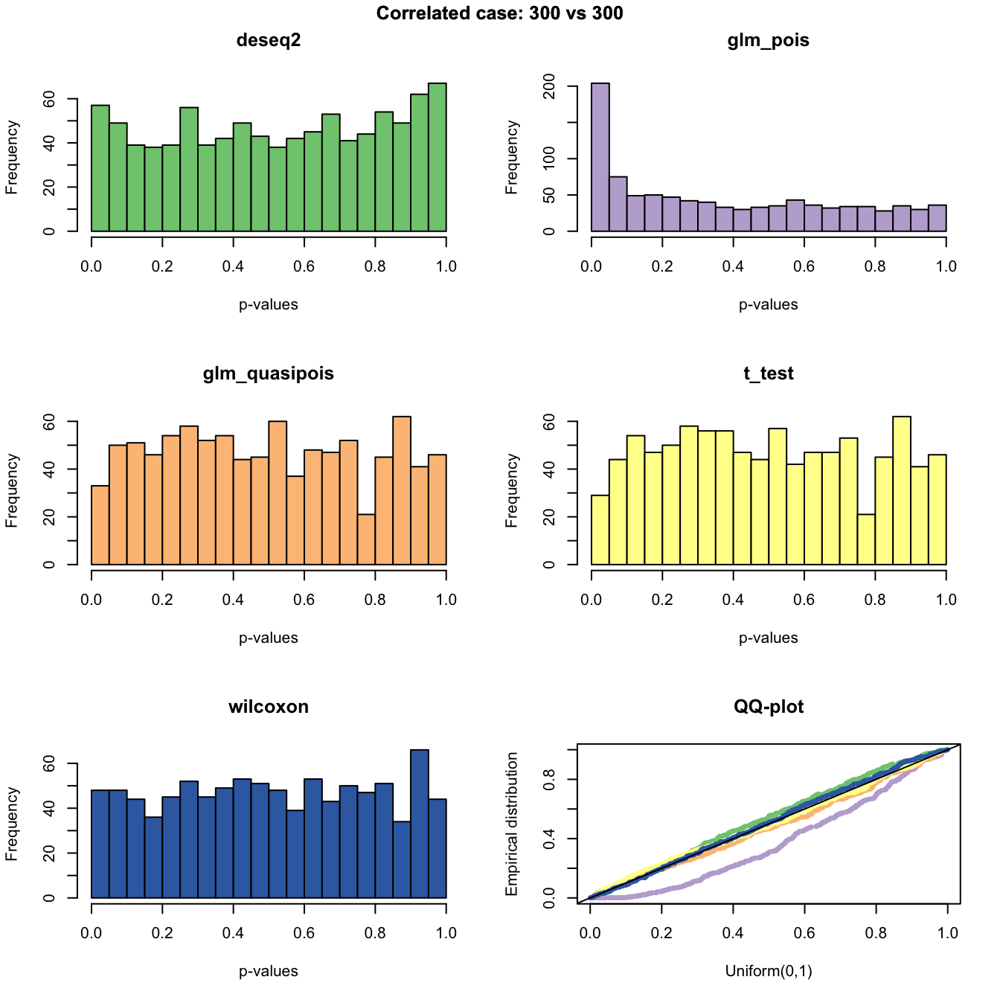
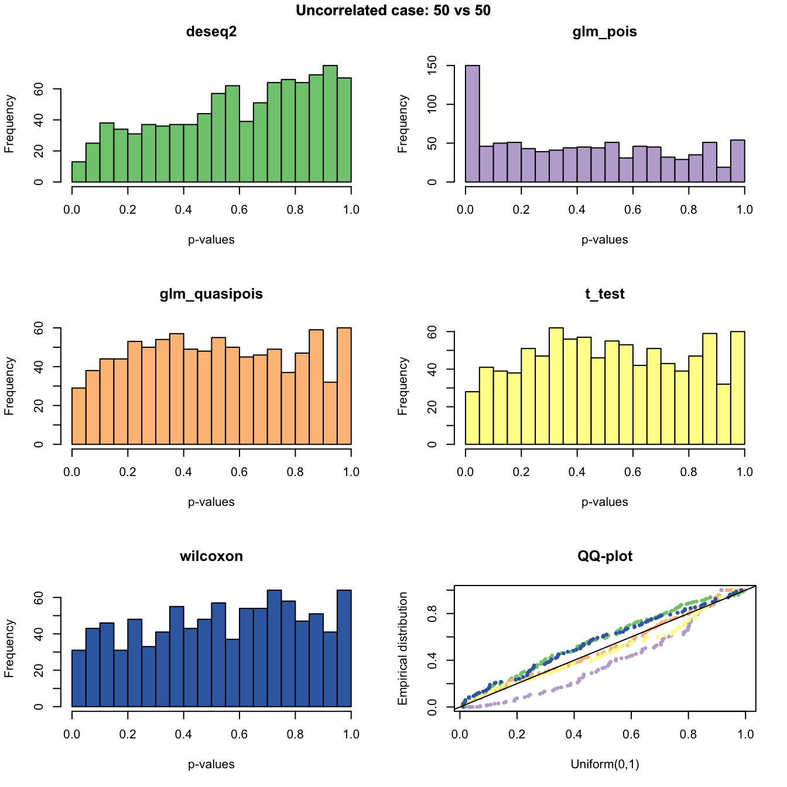
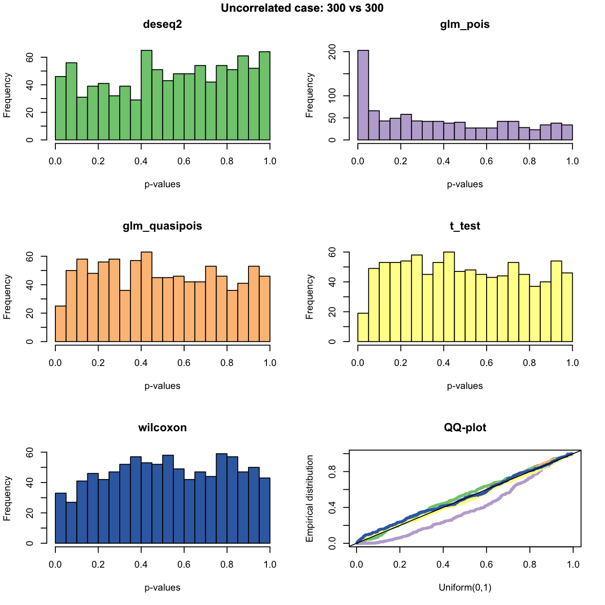

Last updated: 2018-11-17
workflowr checks: (Click a bullet for more information) ✔ R Markdown file: up-to-date
Great! Since the R Markdown file has been committed to the Git repository, you know the exact version of the code that produced these results.
✔ Environment: empty
Great job! The global environment was empty. Objects defined in the global environment can affect the analysis in your R Markdown file in unknown ways. For reproduciblity it’s best to always run the code in an empty environment.
✔ Seed:
set.seed(20181115)
The command set.seed(20181115) was run prior to running the code in the R Markdown file. Setting a seed ensures that any results that rely on randomness, e.g. subsampling or permutations, are reproducible.
✔ Session information: recorded
Great job! Recording the operating system, R version, and package versions is critical for reproducibility.
✔ Repository version: afbb687
wflow_publish or wflow_git_commit). workflowr only checks the R Markdown file, but you know if there are other scripts or data files that it depends on. Below is the status of the Git repository when the results were generated:
Ignored files:
Ignored: .DS_Store
Ignored: .Rhistory
Ignored: .Rprofile
Ignored: .Rproj.user/
Ignored: .sos/
Ignored: analysis/.DS_Store
Ignored: analysis/.sos/
Ignored: dsc/.DS_Store
Ignored: dsc/.sos/
Ignored: dsc/benchmark/.DS_Store
Ignored: dsc/modules/.DS_Store
Untracked files:
Untracked: dsc/benchmark/DESeq2/sample_correlated_1_deseq2_1.rds
Untracked: dsc/benchmark/DESeq2/sample_correlated_1_deseq2_1.stderr
Untracked: dsc/benchmark/DESeq2/sample_correlated_2_deseq2_1.rds
Untracked: dsc/benchmark/DESeq2/sample_correlated_2_deseq2_1.stderr
Untracked: dsc/benchmark/DESeq2/sample_uncorrelated_1_deseq2_1.rds
Untracked: dsc/benchmark/DESeq2/sample_uncorrelated_1_deseq2_1.stderr
Untracked: dsc/benchmark/DESeq2/sample_uncorrelated_2_deseq2_1.rds
Untracked: dsc/benchmark/DESeq2/sample_uncorrelated_2_deseq2_1.stderr
Untracked: dsc/benchmark/glm_pois/sample_correlated_1_glm_pois_1.rds
Untracked: dsc/benchmark/glm_pois/sample_correlated_2_glm_pois_1.rds
Untracked: dsc/benchmark/glm_pois/sample_uncorrelated_1_glm_pois_1.rds
Untracked: dsc/benchmark/glm_pois/sample_uncorrelated_2_glm_pois_1.rds
Untracked: dsc/benchmark/glm_quasipois/sample_correlated_1_glm_quasipois_1.rds
Untracked: dsc/benchmark/glm_quasipois/sample_correlated_2_glm_quasipois_1.rds
Untracked: dsc/benchmark/glm_quasipois/sample_uncorrelated_1_glm_quasipois_1.rds
Untracked: dsc/benchmark/glm_quasipois/sample_uncorrelated_2_glm_quasipois_1.rds
Untracked: dsc/benchmark/sample_correlated/
Untracked: dsc/benchmark/sample_uncorrelated/
Untracked: dsc/benchmark/t_test/sample_correlated_1_t_test_1.rds
Untracked: dsc/benchmark/t_test/sample_correlated_2_t_test_1.rds
Untracked: dsc/benchmark/t_test/sample_uncorrelated_1_t_test_1.rds
Untracked: dsc/benchmark/t_test/sample_uncorrelated_2_t_test_1.rds
Untracked: dsc/benchmark/wilcoxon/
Unstaged changes:
Modified: dsc/benchmark.dsc
Deleted: dsc/benchmark.query.R
Modified: dsc/benchmark/benchmark.conf.mpk
Modified: dsc/benchmark/benchmark.db
Modified: dsc/benchmark/benchmark.map.mpk
Modified: dsc/modules/get_data.dsc
Deleted: dsc/modules/glm.dsc
Modified: dsc/modules/methodsMeanExpression.R
Modified: dsc/modules/methodsMeanExpression.dsc
Deleted: dsc/modules/run_DESeq2.R
Deleted: dsc/modules/run_DESeq2.dsc
Deleted: dsc/modules/t_test.dsc
Deleted: dsc/modules/wilcox_test.dsc
| File | Version | Author | Date | Message |
|---|---|---|---|---|
| Rmd | afbb687 | jhsiao999 | 2018-11-16 | add DESeq2 |
| html | 5dd99de | jhsiao999 | 2018-11-15 | Build site. |
| Rmd | c3707b4 | jhsiao999 | 2018-11-15 | prelim results on two-sample tests |
| html | a85bfe7 | jhsiao999 | 2018-11-15 | add back htmls |
| Rmd | 77988c2 | jhsiao999 | 2018-11-15 | first commit |
| Rmd | 0cc76ea | jhsiao999 | 2018-11-15 | first commit |
We applied two-sample tests for mean difference to simulated datasets.
The methods applied include:
The simulated data were made from experimental datasets as described below.
Draw (sample without replacement) p genes and N samples from the experimental dataset.
For the Correlated case, assign samples to Group 1 or Group 2.
For the Uncorrelated case, permute sample labels for each gene, then in the permuted sample, assign samples to Group 1 or Group 2.
In addition, the parameter setting is:
Sample size (n1 vs n2): 50 vs 50, 300 vs 300
Number of genes (p): 946
Regarding the experimental data:
single cell RNA-seq data from 10x genomics technology
The dataset used in the simulation include CD14+ Monocytes and CD8 T cells, a total of 787 samples and 946 genes.
The original complete dataset include 2,700 single cells and 32,738 genes from 8 immune cell types: B cells, CD4 T cells, CD8 T cells, CD14+ Monocytes, Dendritic cells, FCGR3A+ Monocytes, Megakaryocytes, NK cells.
We filtered the original data to include samples that are detected in > 200 genes and genes that are detected in > 20% of cells.
library(dscrutils)
#setwd("~/Dropbox/GitHub/dsc-log-fold-change/dsc")
dir_dsc <- "/Users/joycehsiao/Dropbox/GitHub/dsc-log-fold-change/dsc/benchmark"
out <- dscquery(dir_dsc,
c("get_data", "get_data.n1", "get_data.n2", "method", "method.p"))Loading dsc-query output from CSV file.
Reading DSC outputs:
- method.p: vectors not extracted (set max.extract.vector = 946 to extract)plotRest <- function(dir_dsc, dscoutput,
sim_case=c("sample_correlated", "sample_uncorrelated"),
sample_size=c(50,300),
title_label, plot=T, return_res=T) {
n_methods <- nlevels(dscoutput$method)
#dscoutput <- out; sim_case="random_sample"; sample_size=50
out.sub <- dscoutput[dscoutput$get_data==sim_case & dscoutput$get_data.n1==sample_size,]
res <- vector("list",n_methods)
for (i in 1:nrow(out.sub)) {
# print(i)
fl <- readRDS(file.path(dir_dsc,
paste0(as.character(out.sub$method.p[i]), ".rds")))
res[[i]] <- data.frame(method = as.character(out.sub$method)[i],
n1_n2 = paste0(out.sub$get_data.n1[i],".",
out.sub$get_data.n2[i]),
pval = fl$p,
stringsAsFactors = F)
}
names(res) <- as.character(out.sub$method)
if (plot) {
cols <- RColorBrewer::brewer.pal(n_methods,name="Accent")
par(mfrow=c(3,2))
for (i in 1:length(res)) {
hist(res[[i]]$pval, main="",
xlab = "p-values", ylab = "Frequency",
nclass = 20, col=cols[i])
title(main=names(res)[i])
}
title(title_label, outer=T, line=-1)
qq <- lapply(1:length(res), function(i) {
qqplot(x=runif(sample_size*2,0,1), y=res[[i]]$pval, plot.it=F)
})
plot(qq[[1]]$x, qq[[1]]$y, col = cols[1], cex=.7, pch = 16,
xlab = "Uniform(0,1)", ylab = "Empirical distribution",
main = "QQ-plot")
for (i in 2:n_methods) {
points(qq[[i]]$x, qq[[i]]$y, col = cols[i], cex=.7, pch = 16)
}
abline(0,1, col = "black")
title(title_label, outer=TRUE, line=-1)
}
if (return_res) {
return(res)
}
}out.corr.50 <- plotRest(dir_dsc=dir_dsc, dscoutput=out,
sim_case="sample_correlated",
sample_size=50,
title_label="Correlated case: 50 vs 50", plot=T, return_res=T)
out.corr.300 <- plotRest(dir_dsc=dir_dsc, dscoutput=out,
sim_case="sample_correlated",
sample_size=300,
title_label="Correlated case: 300 vs 300", plot=T, return_res=T)
out.uncorr.50 <- plotRest(dir_dsc=dir_dsc, dscoutput=out,
sim_case="sample_uncorrelated",
sample_size=50,
title_label="Uncorrelated case: 50 vs 50", plot=T, return_res=T)
out.uncorr.300 <- plotRest(dir_dsc=dir_dsc, dscoutput=out,
sim_case="sample_uncorrelated",
sample_size=300,
title_label="Uncorrelated case: 300 vs 300", plot=T, return_res=T)
sessionInfo()R version 3.4.1 (2017-06-30)
Platform: x86_64-apple-darwin15.6.0 (64-bit)
Running under: macOS High Sierra 10.13
Matrix products: default
BLAS: /Library/Frameworks/R.framework/Versions/3.4/Resources/lib/libRblas.0.dylib
LAPACK: /Library/Frameworks/R.framework/Versions/3.4/Resources/lib/libRlapack.dylib
locale:
[1] en_US.UTF-8/en_US.UTF-8/en_US.UTF-8/C/en_US.UTF-8/en_US.UTF-8
attached base packages:
[1] stats graphics grDevices utils datasets methods base
other attached packages:
[1] dscrutils_0.2.7.11
loaded via a namespace (and not attached):
[1] workflowr_1.1.1 Rcpp_1.0.0 digest_0.6.18
[4] rprojroot_1.3-2 R.methodsS3_1.7.1 backports_1.1.2
[7] magrittr_1.5 git2r_0.23.0 evaluate_0.12
[10] stringi_1.2.4 whisker_0.3-2 R.oo_1.22.0
[13] R.utils_2.7.0 rmarkdown_1.10 RColorBrewer_1.1-2
[16] tools_3.4.1 stringr_1.3.1 yaml_2.2.0
[19] compiler_3.4.1 htmltools_0.3.6 knitr_1.20 This reproducible R Markdown analysis was created with workflowr 1.1.1